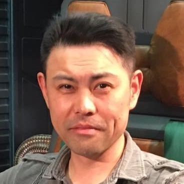
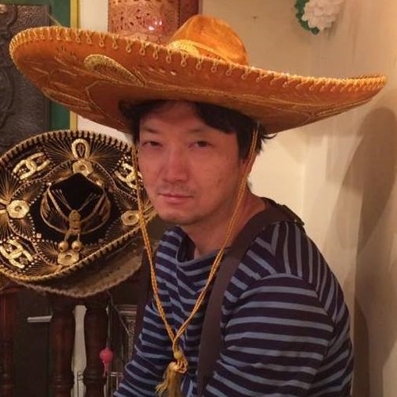
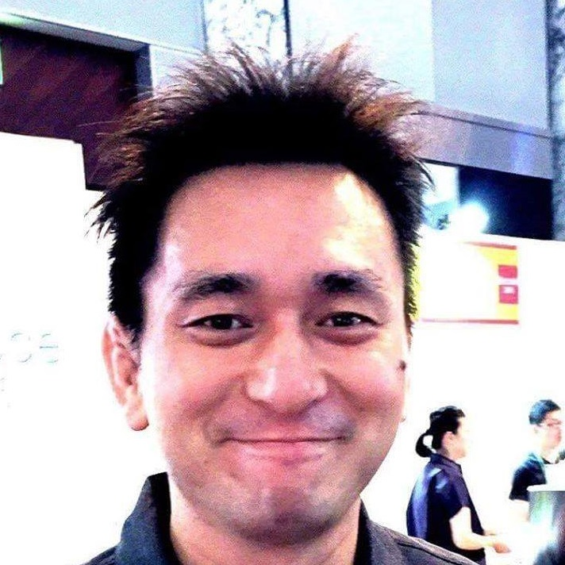
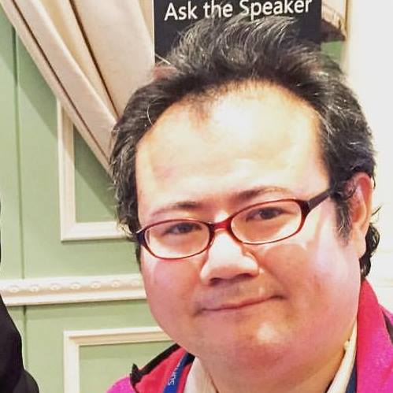
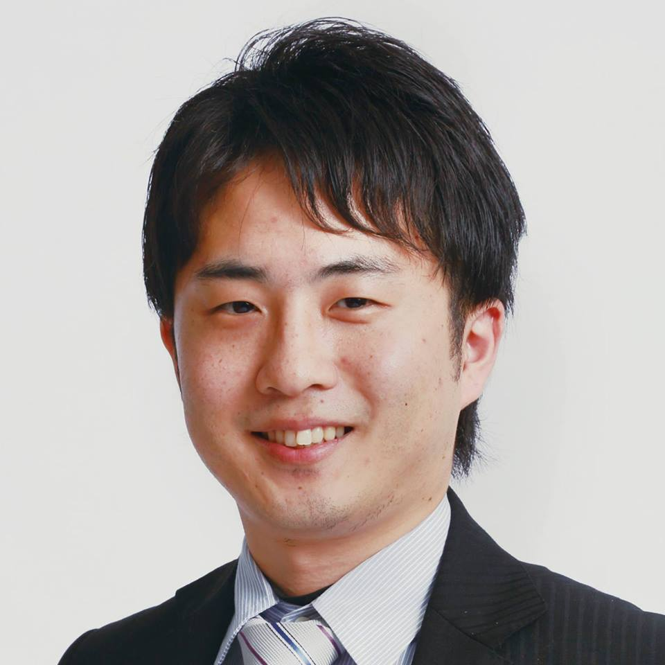

実行委員

砂金 善弘 (実行委員長)
一般社団法人マジカルコンパス
理事

半谷 充生 (副実行委員長)
楽天株式会社
仙台プロデュースグループ
関 満徳 (副実行委員長)
グロースエクスパートナーズ株式会社
ITアーキテクト
池田 道哉 (理事)
株式会社マクロミル
リサーチディレクション部 仙台RDユニット長
太田 伸志
株式会社ラナエクストラクティブ
代表取締役社長兼CEO
工藤 薫
WOW株式会社
Executive Director/Designer
早川 智子
株式会社メンバーズ
リソースディベロップメント室 室長
兼 ニアショア推進室 室長

疋田 圭介
CData Software Japan 合同会社
General Manager
吉島 良平
株式会社パシフィックビジネスコンサルティング
取締役 戦略事業推進室 室長
事務局
関 満徳 (事務局長)
グロースエクスパートナーズ株式会社
ITアーキテクト
佐々木 加代子
株式会社アイネックス
教育ソリューション部 リーダー
里見 恵里嘉
Microsoft Student Partner
グローバル チームリーダー

田中 正巳
株式会社サイバーエージェント
AIRTRACK 開発責任者兼スクラムマスター

鶴田 貴則
NTTコム エンジニアリング株式会社/Studioさきあると
東京オペレーションセンター サービスフロント担当
知念 裕子
株式会社サイト・パブリス
ソリューション事業部エンジニア チーフ

森山 京平
日本マイクロソフト 株式会社
クラウドソリューションアーキテクト
お問い合わせ
仙台IT文化祭 事務局
関 満徳 ( @fullvirtue)
fullvirtue@vivaceplus.com
Designed by htomine
Hosted by GitHub